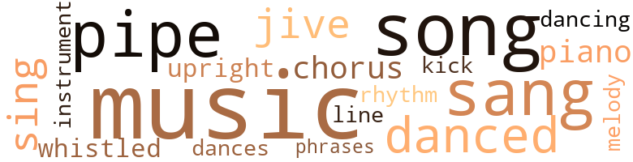
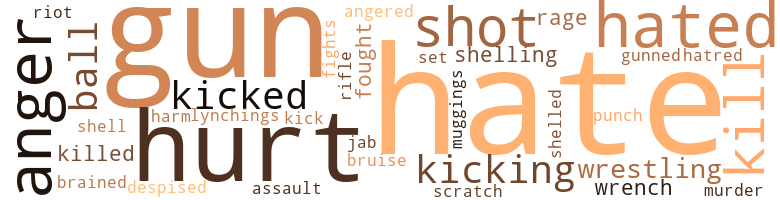
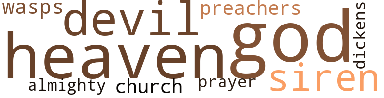

Just an Old Sweet Song, by Van Peebles, Melvin (1976)
36 music-related terms matched in this text.
Most frequent terms in this topic: music (6); sang (3); danced (3); jive (2); song (2)
chorus.n.01
Definition: any utterance produced simultaneously by a group
| word | sentence |
|---|---|
| chorus | Nate followed them into the house and so did a chorus of goodnights . |
dance.n.01
Definition: an artistic form of nonverbal communication
| word | sentence |
|---|---|
| dances | " He sure dances better than you do , Nate , " she teased . |
dance.v.03
Definition: skip, leap, or move up and down or sideways
| word | sentence |
|---|---|
| danced | The texture of the room seemed to change as the jaded beads of light drifted gently onto the walls and danced a slow watlz downward toward the floor . |
| danced | The idea danced in his head . |
| dancing | People were laughing and dancing . |
| danced | Little blue spots danced before her eyes . |
kick.v.04
Definition: kick a leg up
| word | sentence |
|---|---|
| Kick | Kick over a few garbage cans . |
music.n.01
Definition: an artistic form of auditory communication incorporating instrumental or vocal tones in a structured and continuous manner
| word | sentence |
|---|---|
| music | But all he could find were stations that played hill - billy music and more hillbilly music , fundamentalist preachers , wheat and hog prices , weather reports , local news announcements , a hog-calling contest . |
| music | But all he could find were stations that played hill - billy music and more hillbilly music , fundamentalist preachers , wheat and hog prices , weather reports , local news announcements , a hog-calling contest . |
| music | He turned on the radio be - fore he remembered that he hated country music . |
| Music | Music blared up from the sidewalk outside - Baby I need your love , your sweet , sweeet love . . . She pulled Darlene 's quilt up to her chin and closed her eyes to blot out the grill pattern of the steel burglar bars silhouetted behind the pink candy-stripe cafe curtains at Darlene 's window . |
| music | In the door of the shop two teen-aged I girls in tennis shoes bounced up and down to the heat of the music while a fat girl watched them I rom an open window above . |
| music | Kinda thought it was , you know , like loud music , but not noisy , noisy , know what I mean ? " |
| music | The tables rocked to the sound of the music right along with everything else . |
musical_instrument.n.01
Definition: any of various devices or contrivances that can be used to produce musical tones or sounds
| word | sentence |
|---|---|
| instrument | Well , one Way of looking at it , I 'm the instrument for getting them their two weeks off . |
phrase.n.02
Definition: a short musical passage
| word | sentence |
|---|---|
| phrases | Disjointed phrases , snatches of conversation - " Up North ! " |
piano.n.01
Definition: a keyboard instrument that is played by depressing keys that cause hammers to strike tuned strings and produce sounds
| word | sentence |
|---|---|
| piano | As his troubles mounted , Nate could almost hear the tinkling piano and see the subtitle , " When it rains it pours . " |
pipe.n.04
Definition: a tubular wind instrument
| word | sentence |
|---|---|
| pipe | Nate leaned against the sink to catch his breath , " Gon na put this in soon as I find some pipe . " |
| pipes | " Need to get out some old pipes , put some new ones in , but I do n't have much to work with . . . and even less money . |
| pipes | His tailored brown beak poked curiously toward the sound of Nate 's monkey wrench clanging against the rusty metal pipes . |
rhythm.n.04
Definition: the arrangement of spoken words alternating stressed and unstressed elements
| word | sentence |
|---|---|
| rhythm | The rhythm of the songs filtered through the laughter , sweat , and smoke . |
sing.v.02
Definition: produce tones with the voice
| word | sentence |
|---|---|
| sang | " Junior 's not gon na sleep with me , " he sang happily . |
| sang | Junior 's voice sang out from down the hall . |
| sang | Mrs. Allison 's voice sang . |
| sing | The female singer with the band started to sing " The Stormy Monday Blues . " |
| sing | At this , a group of four male singers stepped up to the microphone and began to sing . |
song.n.01
Definition: a short musical composition with words
| word | sentence |
|---|---|
| songs | • " Well , " the voice on the radio drawled , " this heah is one of the fastest-rising songs there is on the charts . |
| songs | The rhythm of the songs filtered through the laughter , sweat , and smoke . |
| song | Auntie Velvet sat on the veranda smiling as she listened to the laughing ; it was like the melody of some old sweet song , it was almost as if she could see , or as if Grandma 's spirit was peeking through the lattice describing the whole thing , the white fleecy clouds .... . |
| song | - drifted back to the car , blending with cricket song and gentle breezes and lulling Nate and Priscilla . |
swing.n.05
Definition: a style of jazz played by big bands popular in the 1930s; flowing rhythms but less complex than later styles of jazz
| word | sentence |
|---|---|
| jive | " Oh , do n't give me that innocent jive , man . |
| jive | He was n't about to get lectured by a total stranger on the same jive crap he could hear from Nate . |
tune.n.01
Definition: a succession of notes forming a distinctive sequence
| word | sentence |
|---|---|
| melody | Auntie Velvet sat on the veranda smiling as she listened to the laughing ; it was like the melody of some old sweet song , it was almost as if she could see , or as if Grandma 's spirit was peeking through the lattice describing the whole thing , the white fleecy clouds .... . |
| line | " You 'll never catch me south of that old Mason Dixon line , " Junior bragged . |
upright.n.02
Definition: a piano with a vertical sounding board
| word | sentence |
|---|---|
| upright | He sat bolt upright , immediately awake . |
whistle.v.01
Definition: make whistling sounds
| word | sentence |
|---|---|
| whistled | He whistled proudly to himself . |
73 violence-related terms matched in this text.
Most frequent terms in this topic: hate (7); gun (5); hurt (5); anger (4); hated (4)
abrasion.n.01
Definition: an abraded area where the skin is torn or worn off
| word | sentence |
|---|---|
| scratch | Once it was going I could have handled it alone , but starting it from scratch and running my farm was too much . " |
anger.n.01
Definition: a strong emotion; a feeling that is oriented toward some real or supposed grievance
| word | sentence |
|---|---|
| anger | Nate 's brow was furrowed in anger . |
| anger | She turned to give him a piece of her mind , but the sight of her three healthy children in the back seat eased her anger . |
| anger | Nate stood in the middle of the room struggling to control the anger swelling up inside of him . |
| anger | The wine eased his anger . |
anger.v.02
Definition: become angry
| word | sentence |
|---|---|
| angered | Mooooo - an old cow angered by the intruders moved deeper into the swaying pasture . |
blast.v.03
Definition: use explosives on
| word | sentence |
|---|---|
| shelling | She sank down into the swing on the porch and began shelling the beans by hand . |
| shelling | His mother placidly continued shelling her lima beans . |
| shelled | " They come in a plastic bag already shelled at the supermarket , " he told her , picking up a handful of beans . |
| shell | Priscilla continued to shell her lima beans quietly . |
brain.v.02
Definition: kill by smashing someone's skull
| word | sentence |
|---|---|
| brained | He took a belly whopper in the mud trying to duck a support beam that had come loose , but it brained him anyway . |
bruise.n.01
Definition: an injury that doesn't break the skin but results in some discoloration
| word | sentence |
|---|---|
| bruise | Junior rubbed the spot , thinking of the bruise he was gon na get . |
contemn.v.01
Definition: look down on with disdain
| word | sentence |
|---|---|
| despised | He despised the South . |
fight.n.05
Definition: a boxing or wrestling match
| word | sentence |
|---|---|
| fights | Not intending to get involved in other folks ' fights , Pete was keeping a discreet silence . |
fight.v.02
Definition: fight against or resist strongly
| word | sentence |
|---|---|
| fought | Nate fought to find the right words . |
| fought | The tires fought for a grip on the gravel shoulders , then leaped forward down the road . |
fury.n.01
Definition: a feeling of intense anger
| word | sentence |
|---|---|
| rage | Junior 's chin trembled with disappointment and rage . |
| rage | he thought , writhing and twisting but helpless with rage and fear . |
gun.n.01
Definition: a weapon that discharges a missile at high velocity (especially from a metal tube or barrel)
| word | sentence |
|---|---|
| gun | A beefy sheriff in a short-sleeved gray uniform and what looked like a parody of a cowboy hat got out of the car , hitching up his pants over a protrud - ing potbelly and adjusting his gun belt over his hips . |
| gun | " Highpockets would n't fool around with a gun ; he knows better than to go bothering with some - thing like that . " |
| gun | Before he knew what was happening , a policeman had him spread-eagle against the wall with a gun at his head while an - other tore to the rear of the apartment to the fire escape . |
| gun | The second officer returned from the fire escape , putting his gun back in his holster . |
| gun | It was n't exactly a secret that Curly Top packed a gun and ca n't nobody outrun a bullet . |
gun.v.01
Definition: shoot with a gun
| word | sentence |
|---|---|
| gunned | His finger just touched the door when the driver gunned the motor . |
hate.n.01
Definition: the emotion of intense dislike; a feeling of dislike so strong that it demands action
| word | sentence |
|---|---|
| hatred | Instead of prejudice and hatred , he 'd met a very nice human being . |
hate.v.01
Definition: dislike intensely; feel antipathy or aversion towards
| word | sentence |
|---|---|
| hated | He turned on the radio be - fore he remembered that he hated country music . |
| hate | " I hate to leave ! " |
| hate | Julie plopped down too , her elbows on the table and her sunny face , suddenly sad , in her hands , " I hate to see you go ! " |
| hate | " I hate to leave , too . |
| hate | I 'd hate to be lost over there in that tall grass . |
| hated | Little escaped his pry - ing eyes , and people either liked that about him or hated it . |
| hated | He watched Junior and the boy hated it . |
| hated | He hated himself . |
| hate | " Man , I hate a chick got telegraph-pole legs , same size all the way down . |
| hate | Black people hate the South - we 're scared of it , humiliated by it , we ... " " I 'm black , " Grandma shot back , her voice rising . |
| hate | " I hate what it stands for , what the word Dixie does to my insides . . . but I love you and we 're a family , so we 're all going . " |
hurt.v.04
Definition: cause damage or affect negatively
| word | sentence |
|---|---|
| hurt | " You know Elmo , I 'm gon na let you slide this time 'cause I do n't wanta hurt your feelings . " |
injury.n.01
Definition: any physical damage to the body caused by violence or accident or fracture etc.
| word | sentence |
|---|---|
| harm | ' a " Come on , " Nate said , gripping Joe by the amtf and pulling him out of harm 's way . |
jab.n.02
Definition: a quick short straight punch
| word | sentence |
|---|---|
| jab | Junior was n't prepared for the power behind the second jab in his shoulder . |
kick.v.04
Definition: kick a leg up
| word | sentence |
|---|---|
| Kick | Kick over a few garbage cans . |
kick_back.v.02
Definition: spring back, as from a forceful thrust
| word | sentence |
|---|---|
| kicking | Things were rough at home and Tiger guessed it would n't be long before his folks were gon na be kicking him out . |
| kicked | The tragic possible result of being kicked out lay like a putrid corpse between them , unacknowl - edged . |
| kicking | Joe had begun making himself comfortable by kicking off his shoes . |
| kicked | Nate kicked off his shoes . |
| kicking | No mean-eyed overseer kicking him in the groin or sending a whip , slicing through the air to snip off the lobe of his right ear ; as a lesson to laggards . |
| kicked | Their strutting shadows kicked a can , turned a corner , and disappeared . |
kill.v.10
Definition: cause the death of, without intention
| word | sentence |
|---|---|
| killed | Anyway , they said it went off accidental . . . killed the boy . |
| killed | You see , it was ' round the time those three civil rights workers got killed and people were n't believ - ing much what white folks had to say . " |
| kill | " Did you kill that boy ? " he asked . |
| kill | " Did Mrs. Claypool kill him ? " |
| kill | " Jimmy : Miss Lane , if Superman enters that cave , the kryptonite will kill him . |
lynching.n.01
Definition: putting a person to death by mob action without due process of law
| word | sentence |
|---|---|
| lynchings | Thirteen - she was still a baby , too young to know about lynchings and stuff like that . |
mugging.n.01
Definition: assault with intent to rob
| word | sentence |
|---|---|
| muggings | In the corner of the park nearest the street , where an extra lamp had been installed to discourage muggings , a bunch of guys were taking advantage of the illumination by slamming up against each other playing football . |
murder.n.01
Definition: unlawful premeditated killing of a human being by a human being
| word | sentence |
|---|---|
| murder | Junior advanced with murder in his eyes . |
musket_ball.n.01
Definition: a solid projectile that is shot by a musket
| word | sentence |
|---|---|
| balls | The red Georgia clay puffed up in balls around Highpockets ' tennis shoes as he played . |
| ball | Suddenly , a football thudded at Elmo 's feet and a voice rang out from the scrimmage : " Throw the ball , please ! " |
| ball | Elmo threw the ball . |
pain.v.02
Definition: cause emotional anguish or make miserable
| word | sentence |
|---|---|
| hurt | " A few more weeks wo n't hurt anything , Junior . " |
| hurt | Do n't guess your germs will hurt me none too bad . " |
| hurt | " I 'm not gon na hurt you , boy . |
| hurt | " I do n't mess with your pappy while he 's on his job - now git off my girls ' job before I hurt you . |
punch.n.01
Definition: (boxing) a blow with the fist
| word | sentence |
|---|---|
| punch | " Your sister , " said Tiger Lily , jumping deftly to avoid the punch he knew was coming . |
rape.n.03
Definition: the crime of forcing a woman to submit to sexual intercourse against her will
| word | sentence |
|---|---|
| assault | The sudden assault on the apartment door jolted him out of his reverie . |
rifle.n.01
Definition: a shoulder firearm with a long barrel and a rifled bore
| word | sentence |
|---|---|
| rifle | " They said the boy was in the kitchen play - ing with Claypool 's old birdshot rifle . |
riot.n.01
Definition: a public act of violence by an unruly mob
| word | sentence |
|---|---|
| riot | We coulda shot this kid and started a riot or something . " |
shoot.v.02
Definition: kill by firing a missile
| word | sentence |
|---|---|
| shot | " A few years back , a kid accidentally shot him - self over at Claypools ' , " Helen blurted . |
| shot | A pair of headlights bumped down the driveway and a sudden backfire shot into the night . |
| shot | We coulda shot this kid and started a riot or something . " |
sic.v.01
Definition: urge to attack someone
| word | sentence |
|---|---|
| set | tomatoes to be hauled somewhere in gleaming containers , to be washed and polished , and set on display for the housewives of the world to pinch and com - plain . |
wrench.n.01
Definition: a sharp strain on muscles or ligaments
| word | sentence |
|---|---|
| wrench | " Hey , " the foreign voice shouted again , diverting Joe 's attention long enough to allow the robber to wrench free . |
| wrench | He shifted onto his left side to get a better angle for slipping his wrench over the drain elbow . |
wrestle.v.01
Definition: combat to overcome an opposing tendency or force
| word | sentence |
|---|---|
| wrestling | Nate was wrestling with a porcelain commode he 'd found in a corner when Priscilla 's form blocked the light from the doorway . |
| wrestling | " My arms are tired of wrestling with this steering wheel . " |
17 religion-related terms matched in this text.
Most frequent terms in this topic: God (4); devil (2); wasps (1); sirens (1); Heaven (1)
church.n.02
Definition: a place for public (especially Christian) worship
| word | sentence |
|---|---|
| church | The members of the lodge and the church ladies ' , auxiliary will take care of all that " " Thank you so much . " |
devil.n.03
Definition: a word used in exclamations of confusion
| word | sentence |
|---|---|
| dickens | This boy is a heavy little dickens , she thought . . . . |
eden.n.01
Definition: any place of complete bliss and delight and peace
| word | sentence |
|---|---|
| heaven | " Our son is out on the road , hitchhiking and heaven only knows what could happen to him . " |
| Heaven | Our Father who art in Heaven , hallowed be Thy name , please let him change the subject . |
god.n.03
Definition: a man of such superior qualities that he seems like a deity to other people
| word | sentence |
|---|---|
| God | He half expected , God knows what , to see the Ku Klux Klan standing in the yard hold - ing a burning cross . |
| God | This is how God has chosen to punish me , he thought angrily as blackness closed in around him . |
| God | God bless the child that 's got his own . " |
| God | " Elmo is not exactly what you 'd call God 's gift to beauty . |
godhead.n.01
Definition: terms referring to the Judeo-Christian God
| word | sentence |
|---|---|
| Almighty | And Tiger Lily here looks like when the Almighty got to putting pretty into people . |
heaven.n.02
Definition: the abode of God and the angels
| word | sentence |
|---|---|
| heavens | Thank heavens their block was n't as bad as some . |
prayer.n.01
Definition: the act of communicating with a deity (especially as a petition or in adoration or contrition or thanksgiving)
| word | sentence |
|---|---|
| prayer | Grandma was just about bowled over in the middle of her thank-God prayer when a jubilant Highpockets rushed up and grabbed her around the waist . |
preacher.n.01
Definition: someone whose occupation is preaching the gospel
| word | sentence |
|---|---|
| preachers | But all he could find were stations that played hill - billy music and more hillbilly music , fundamentalist preachers , wheat and hog prices , weather reports , local news announcements , a hog-calling contest . |
satan.n.01
Definition: (Judeo-Christian and Islamic religions) chief spirit of evil and adversary of God; tempter of mankind; master of Hell
| word | sentence |
|---|---|
| devil | How the devil did you farm worms ? " |
| devil | They sure look like the devil but they do feel good . . . . |
siren.n.01
Definition: a sea nymph (part woman and part bird) supposed to lure sailors to destruction on the rocks where the nymphs lived
| word | sentence |
|---|---|
| sirens | She walked cheerfully through the farmyard to the house , hear - ing the happy cries of her two younger children playing in the distance , and thinking about what a good , quiet night 's sleep she 'd had with no police or fire sirens or noisy neighbors to contend with . |
| siren | AAArrrrrrrrrrrrr - the sound of a siren cut the late-afternoon ghetto air . |
wasp.n.01
Definition: a white person of Anglo-Saxon ancestry who belongs to a Protestant denomination
| word | sentence |
|---|---|
| wasps | He nonchalantly low - ered the torch he had used to burn the paper-thin wasps ' nest attached to the corner of Grandma 's two-holer outdoor toilet . |